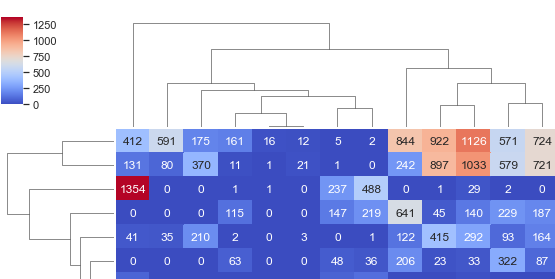
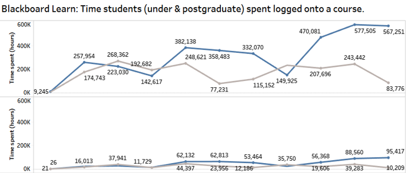
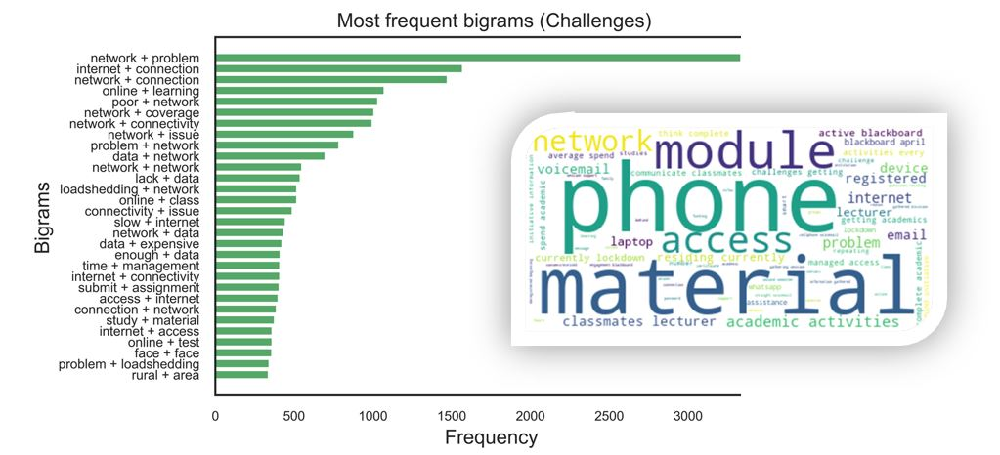
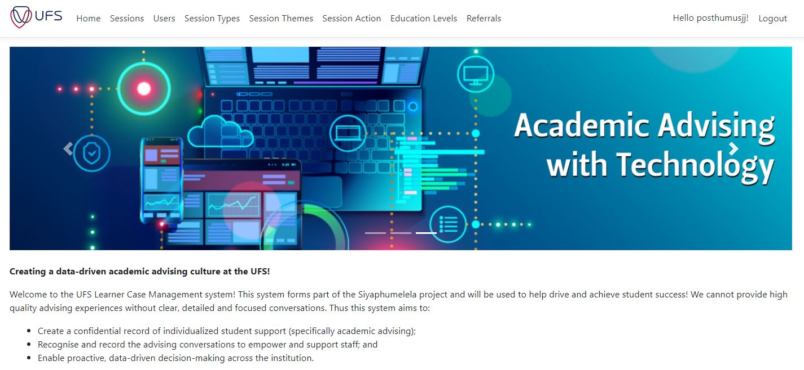

About
Summary
With 14+ years of experience at the University of the Free State, I am a data scientist
specializing in enhancing student success. I architect and build high-impact data solutions,
from predictive ML models processing 150,000+ applications annually to the
core
algorithms for a R170 million foundation partnership. I excel at
translating complex data into institutional strategy and delivering robust, scalable
systems.
Background
My career path is driven by a passion for understanding complex systems. I began in
applied biotechnology, conducting metagenomics research where I co-authored
publications and an international patent. This technical R&D role honed my ability to design
experiments
and analyze intricate data to find novel solutions.
I extended this scientific mindset from biological systems to an equally complex domain:
student success in higher education. For the last 7+ years, I have been the lead
data
scientist driving the analytics and AI strategy for over 40,000 students.
This unique cross-contextual background allows me to bridge the gap between pure research and
practical, high-impact application. My background in financial analysis (CFA Level 1) and
management development ensures these solutions are not just technically novel, but also
strategically and financially sound.
My work is best summed up by Kurt
Lewin's
quote:
"There is nothing so practical as a good theory".
Kurt Lewin
Experience
| Job Description |
Employer |
Duration |
| Data Scientist/Analyst |
University of the Free State,
Centre for Teaching and Learning |
Nov 2018 - Present
7 years |
| Researcher |
University of the Free State,
Metagenomics Platform |
Oct 2012 - Nov 2018
6 years 2 months |
| Research Assistant |
University of the Free State,
Metagenomics Platform |
Jun 2010 - Aug 2011
1 year 3 months |
Education
| Institution |
Qualification |
Year |
| CFA Institute |
Level 1 exam passed in the CFA Program |
2016 |
| University of the Free State |
Management Development Programme Certificate |
2014 |
| University of the Free State |
Bachelor of Science (B.Sc.Hons) |
2013 |
| University of the Free State |
Bachelor of Science (B.Sc.) |
2011 |
Top skills
- Data analytics and statistical modeling
- Data science and machine learning
- Generative AI development
- Automation & process optimization
- System architecture & development
- Data manipulation and querying (SQL)
- Applied science research
- Technical communication & training
- Programming (Python-first)
Recent achievements
- Authored the core algorithms for a R170 million student success
partnership with the Michael Susan Dell Foundation.
- Developed and deployed a predictive ML model with 85% accuracy, processing over
150,000+ applications annually to inform university policy.
- Led COVID-19 analytics for 40,000+ students annually, authoring 65 reports that
became a
national DHET reporting best practice and secured multi-million Rand subsidies.
- Architected and developed the Learner Case Management (LCM) system from initial
prototype (Python/C#) to a production system central to student advising support.
-
Conducted a comprehensive impact analysis on developmental modules, demonstrating their role in
addressing the national equity gap and securing over R20
million in annual tuition.
- Built and trained an internal transformer model to inform institutional AI
strategy, presenting the R&D findings at the 2023 SAAIR conference.
- Presented an invited 4-hour workshop on AI implementation and prompt engineering to the
Council for Higher Education (CHE).
- Co-authored research on Generative AI for Assessment, which was accepted for a
special edition of the South African Journal of Higher Education.
- Automated a critical registration task using a Python bot, reducing a process that took four
people weeks down to just 8 minutes.
Key Projects
Here are spotlights of my most impactful work, structured using the "Problem / Solution /
Impact" framework. More details can be found in the skill-specific sections.
NBT predictive algorithm & automation bot
Problem: During the pandemic, many students couldn't take the compulsory National
Benchmark Test (NBT) for financial reasons, blocking them from registration.
Solution: I developed a Gradient Boosting Machines (GBM) algorithm to predict
student academic literacy scores, allowing for exemptions. I then built a Python email bot to
automate the generation and sending of 1,000+ personalized HTML notification emails per minute.
Impact: Processed over 150,000 applications per year for the last 5 years, achieved
85% out-of-sample accuracy,
and reduced a task that took four people weeks to just eight minutes. The algorithm is
institutionalized in the University's General Rules.
Michael Susan Dell Foundation (MSDF) student success algorithms
Problem: The university needed a robust, scalable system to proactively identify
at-risk students and track their progress toward career-readiness.
Solution: I authored all the core algorithms for a ZAR 170 million, 7-year
partnership. This included the "Scaled Responsive Student Tracking" algorithm (an advanced early
warning system) and the "Employability Tracking Algorithm" which pulls, integrates, and analyzes
data to award badges as students hit milestones.
Impact: These algorithms form the foundation of the university's next-generation
student success and retention strategy, directly improving graduation rates and securing a major
long-term institutional partnership.
COVID-19 Engagement Analytics (40,000+ Students)
Problem: At the start of the pandemic, top management had no visibility into
whether teaching and learning were happening effectively online for over 40,000 students.
Solution: I led the tracking and analysis of all online engagement (LMS access,
video sessions, assessment completion, etc.). I authored 65 detailed reports that were delivered
directly to top management and our rector.
Impact: The reports became a national DHET reporting requirement, were presented to
the Minister of Higher Education, significantly reduced the University's risk score, and led to
multi-million Rand subsidies.
Learner Case Management (LCM) System
Problem: The University needed an efficient, standardized, and scalable system to
keep accurate records of advising support provided to students.
Solution: I led the conceptualization and development of the LCM system from the
ground up. I wrote the initial prototype code in Python and C# and oversaw a two-year testing
period to normalize, standardize, and validate all processes and data.
Impact: The LCM system is now the central, reliable platform for tracking all
student support interactions and serves as the foundational data source that integrates with the
R170 million MSDF student success algorithms.
"Baby AI" (Internal LLM Research & Development Project)
Problem: Following the launch of ChatGPT, the University needed to urgently
understand the technical capabilities, risks, and resource costs of Generative AI in our own
context.
Solution: I built a small-scale transformer model ("Baby AI") from scratch. I
trained it on institutional parallel corpora (an academic literacy study guide) to test its
real-world performance on translation and question-answering tasks.
Impact: This R&D project provided critical, hands-on insights into training time,
data requirements, accuracy, and hallucinations. The findings were presented at the 2023 SAAIR
conference and directly informed the Center of Teaching and Learning's AI strategy.
NISS (Georgia State University) Data Collaboration
Problem: The UFS is collaborating with the NISS to analyze 10 years of student
learning pathways, a project requiring the extraction and processing of massive, complex historical
datasets.
Solution: As the lead for institutional data provision, I developed Python scripts
using multiprocessing to concurrently pull, process, and automate the handling of these large-scale
data requests from our Microsoft SQL Server.
Impact: My automated scripts enabled this high-profile international research
collaboration, accelerating the data-extraction-to-analysis pipeline and providing the foundation
for new insights into student success.
Get in Touch
I'm actively seeking new opportunities and would be happy to discuss how my skills can benefit your
team. Please feel free to reach out via email or connect with me on LinkedIn.
Applied Science Research

While my experience at the Metagenomics Platform may not have been in the field of data science, it
provided me with foundational skills that are crucial in my daily work as a data scientist.
Specifically, my time there honed my abilities to think critically, problem-solve, and effectively
apply theoretical concepts to practical solutions. During my employment at the Metagenomics
Platform,
I was a co-author and intellectually contributed
to the following highlights:
- 2 Journal papers
- 1 conference poster presentation.
- 1 international patent.
- 10+ technical reports.
- 10+ proposals.
- Numerous presentations to stakeholders, colleagues,
mining companies and the Department of Water Affairs.
Data Analytics

My analytics work focuses on translating raw data into actionable
insights, institutional strategy, and executive-level reports. I find the "why" in the data.
Executive Reporting & BI
I led the analytics and reporting on student engagement during the pandemic, providing
critical data for top-level institutional management.
- COVID-19 Engagement Analytics: Monitored 40,000+ students, authoring 65
high-impact reports for top management and the rector. These reports became a **national
DHET best practice** and secured multi-million Rand subsidies.
Strategic Impact Analysis
I conduct deep-dive analyses to measure the financial and academic impact of institutional
programs, informing strategic planning.
- Developmental Module Analysis: Conducted a comprehensive impact
analysis that proved the positive effect of developmental modules, justifying over **R20
million in annual tuition** and confirming their role in addressing the national equity
gap.
Experimental Design & A/B Testing
I design and execute formal experiments to test hypotheses and determine the effectiveness of
interventions.
- Student Nudging Pilot: Designed and implemented an A/B testing pilot to
analyze the effectiveness of different nudges toward online support resources, informing
future intervention strategies.
Statistical Analysis & Insight Generation
I use statistical methods to refine definitions and identify the root causes of complex
challenges.
- Defining Student Success: Conducted a formal correlation study to
identify the key factors that define "student success," refining the logic for our early
warning systems.
- Credit Load Analysis: Used outlier detection experiments to refine the
"credit load nudging" approach, making it more accurate and effective.
Data Science Skills

This is where I build predictive and classification models to forecast
outcomes, identify at-risk students, and create new data-driven capabilities for the institution.
Predictive Modeling & Machine Learning
I build and deploy machine learning models to solve specific institutional challenges, from
registration to retention.
- NBT Predictive Algorithm: Developed a Gradient Boosting Machines (GBM)
model to predict student academic literacy scores, processing 150,000+ applications
annually with 85% accuracy.
- Student Success Algorithms (MSDF): Authored the "Scaled Responsive
Student Tracking" algorithm, an advanced early warning system to identify at-risk
students in real-time.
- Productivity Web App: Built the ML prioritization and time-prediction
algorithms for the "Energia" productivity app.
Risk Scoring & Outlier Detection
I develop custom algorithms to score and rank students or modules based on complex risk
factors, enabling targeted interventions.
- High Priority Modules Algorithm: Designed an outlier detection
algorithm to identify high-risk modules for proactive academic support, moving beyond
traditional linear models.
- Review Index Algorithm: Created a point-based scoring algorithm to rank
at-risk students for campus permits during COVID-19, synthesizing data from multiple
non-integrated sources.
Clustering & Student Segmentation
I use unsupervised learning to discover hidden patterns in the student population, informing
policy and equity initiatives.
- Equity Gap Analysis: Developed a Hierarchical Clustering algorithm to
segment the student population, identifying underserved student groups and enabling
targeted support to reduce the equity gap.
Software Engineering Skills

My data science and AI skills are built on a strong foundation of software engineering. I don't just
build models; I build robust, production-ready systems, data pipelines, and automation tools. Below
are my core programming competencies.
System Architecture & Full-Stack Development
I architect and build systems from initial prototype to full production deployment, handling
both backend logic and frontend integration.
- Learner Case Management (LCM) System: Led the conceptualization and
development from an initial Python/C# prototype to the central production system now
used for all student advising.
- MSDF Project: Responsible for the full-stack development and
architecture of the R170 million student tracking project, including all database,
application, and frontend layers.
- Energia Web App: Developed the frontend interface in Flask and the
backend database for this ML-powered productivity app.
Automation & Process Optimization
I write scripts and bots to automate complex, repetitive tasks, saving thousands of man-hours
and reducing manual error.
- NBT Email Bot: Wrote a Python bot that reduced a critical registration
task from **weeks to 8 minutes** by auto-generating and sending 1,000+ personalized HTML
emails per minute.
- "Grapevine" Internal Scheduler: Created a scheduler to automate
repeating ad-hoc data processing and report distribution.
- Selenium Bot: Deployed a bot to automate manual web-scraping and
data-entry tasks from our LMS, saving staff hundreds of clicks per module.
High-Performance Data Engineering
I have deep experience in writing complex, efficient queries and scripts to manage, process,
and analyze massive datasets across multiple database systems.
- Python Multiprocessing: Wrote multiprocessing scripts for the NISS
(Georgia State) collaboration to concurrently pull and process 10 years of historical
student data.
- Cross-Platform SQL: Authored and translated complex queries across
PostgreSQL, Snowflake, and MS SQL Server for various analytics projects.
- Data Management: Develop and maintain the core SQL and Python
data-processing pipelines that power the NBT algorithm in real-time.
Natural Language Processing (NLP)
I build and deploy algorithms to extract structured insights from unstructured text data.
- Text Mining Algorithm: Deployed to analyze student self-reported risk
narratives, extracting key themes to support the Review Index.
- Sentiment Analysis: Built tools for sentiment analysis and topic
modeling on student feedback.
- Web Scraping: Developed web scrapers to extract text data for NLP
analysis.
Data Governance & ODS Development
I serve as a key stakeholder in institutional data strategy, ensuring compliance and utility.
- Data Officer: Act as the data officer and system admin for the
university's student success data, ensuring POPIA compliance.
- ODS Development: Co-designed the Student Success and Employability
(SSE) ODS and wrote the institutional business glossary for the ODS data dictionary.
Artificial Intelligence

As the lead data scientist for the Siyaphumelela project, I am responsible for investigating and
implementing contextualised AI in our higher education environment. My work covers the full
lifecycle, from hands-on R&D to institutional strategy.
Generative AI Research & Development
To understand the core technology, I built a small-scale transformer model from scratch to
test its capabilities and limitations within our institutional context.
- "Baby AI" Internal LLM: Built and trained a transformer on
institutional documents to test translation and question-answering. This R&D provided
critical insights into training time, data requirements, accuracy, and hallucinations,
informing our AI strategy.
AI Strategy & Feasibility Analysis
I conduct technical and financial stress tests to evaluate the feasibility of scaling AI
solutions, informing buy-vs-build decisions.
- Vendor vs. Open-Source Testing: Ran extensive experiments to evaluate
paid vendor APIs (token limits, cost) against open-source models, testing for hardware
limitations, quantization, and performance on key competencies (logic, coding, writing).
Applied AI for Higher Education
I am actively researching the practical application of Generative AI to solve specific
challenges in teaching and learning.
- GAI for Assessment Research: Co-authored research on using GAI to
support and streamline feedback on written assessments. Our abstract was accepted (Oct
2025) for a special edition of the *South African Journal of Higher Education*.
AI Literacy, Training & Prompt Engineering
I develop and present high-level workshops to equip faculty, staff, and national bodies with
AI literacy and practical skills.
- Council for Higher Education (CHE): Presented an invited 4-hour
workshop to the CHE on using LLMs to enhance data analysis and operational efficiency.
- Internal Capacity: Developed and presented a "Prompt Engineering Crash
Course" and AI literacy workshops for the Centre for Teaching and Learning (CTL).